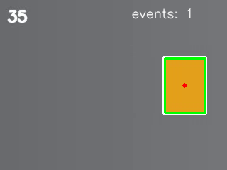
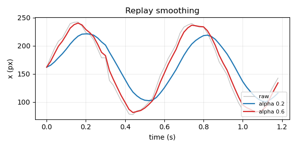

综合
这一部分把前面分散的读写、NumPy、OpenCV、图表与工程写法合成一个 可复现的视频目标计数工具：先拆任务与参数，再实现检测、跟踪和越线 计数，最后补上命令行、日志、报告与离线回放。
读本部分之前，需要先读 1.6（函数）、 2.3（模块、包与导入）、 3.1（文件读写与 with）、 3.2（异常与错误处理）、 3.4（CSV、JSON 与 YAML 配置）、 3.5（argparse 与命令行工具）、 3.6（logging 与调试输出）、 4.1（数组创建）、 4.2（索引与切片）、 4.3（形状与广播）、 4.4（聚合）、 5.1（图像读写）、 5.2（颜色空间与掩码）、 5.3（轮廓与形状）、 5.4（视频读写）、 6.1（画布、坐标轴与折线图）、 7.1（把脚本拆成包）、 7.2（命令行入口与子命令）、 7.3（单元测试 unittest）。
8.1任务拆解：视频目标计数
目标计数（target counting）的任务是统计目标进入指定区域的次数。输入 是一段背景固定的视频，输出包括进入次数、供复查的标注视频与逐帧记录。 固定背景让颜色分割（color segmentation）足够可靠，但画面里仍会有 边缘抖动、掩码缺口与短时漏检，因此需要一个明确的判据，把“检测到 目标”与“记一次进入”分开。
先把任务写成可检查的句子：对每一帧找出橙色方块的重心；相邻两帧的 重心距离不超过阈值时视为同一个目标；重心从左向右越过竖线时记一次 事件；同一事件在若干帧内不重复计数。下面依次确定输入输出、流程参数 与数据结构。
输入与输出
合成视频 素材/synth_cube.mp4 为 320×240 像素、12 帧每秒、
共 36 帧。橙色方块从左侧进入，每帧向右移动 6 像素，中心从第 0 帧的
(50.0, 120.0) 移到第 35 帧的 (260.0, 120.0)（保留一位小数）。方块在
画面里的面积约为 4255.5 平方像素，颜色与灰色背景差异明显，适合用
HSV 颜色区间提取。
工具最终写出四类结果：标注视频 out_count.mp4，保留检测框、
重心、竖线与事件数；逐帧记录 out_tracks.csv，每行一帧，
列为帧号、重心横纵坐标与轮廓面积；汇总
out_summary.json，记录帧数、检测帧数、事件数与事件帧号；
最后一帧的标注图 out_count_frame.png，用于页面展示。
流程与参数
处理流程由五步组成：读一帧，转成 HSV 并按橙色区间生成掩码 （mask）；对掩码做开运算（opening），去掉零散噪点；查找外轮廓 （contour），按面积筛掉小块并保留最大的一块；用图像矩（moments）求 重心；把重心交给跟踪器（tracker），判断是否越线并更新事件。
参数分为两类。颜色区间、最小面积与越线位置决定“什么算目标、在哪里
计数”，需要按场景调整；视频路径、输出目录与日志开关只影响运行方式，
由命令行传入。合成视频的参数取 HSV 下限 (5, 100, 100)、
上限 (35, 255, 255)、最小面积 1000、竖线横坐标 180。
方块每帧移动 6 像素，最近邻关联的步长上限取 40 像素，留出漏检一帧
的余量。
数据与判据
检测结果用数据类（dataclass）Detection 保存五个字段：
帧号、重心横坐标、重心纵坐标、轮廓面积与外接矩形。轨迹不单独建类，
跟踪器只保留上一帧的检测与事件列表；越线判据同时检查方向与去抖
（debounce）间隔。方向判据是上一帧横坐标小于竖线、当前帧不小于
竖线；去抖间隔为 5 帧，避免目标在竖线附近抖动时重复计数。
这些判据先写进参数表，再用一段只读视频的扫描程序核对。扫描程序不写 结果文件，只打印元数据、首末重心、面积范围与首次穿越帧；数值稳定后， 再进入完整实现。
题目：读取 素材/synth_cube.mp4，统计帧数、尺寸与帧率；用橙色区间与最大轮廓求每帧重心，打印首末重心与面积范围；统计重心从左向右越过 x = 180 的首次帧号。
from pathlib import Path
import cv2
import numpy as np
SOURCE = Path("素材/synth_cube.mp4")
LOWER = np.array([5, 100, 100])
UPPER = np.array([35, 255, 255])
KERNEL = np.ones((3, 3), np.uint8)
LINE = 180.0
cap = cv2.VideoCapture(str(SOURCE))
if not cap.isOpened():
raise SystemExit("cannot open video: %s" % SOURCE)
frames = int(cap.get(cv2.CAP_PROP_FRAME_COUNT))
width = int(cap.get(cv2.CAP_PROP_FRAME_WIDTH))
height = int(cap.get(cv2.CAP_PROP_FRAME_HEIGHT))
fps = cap.get(cv2.CAP_PROP_FPS)
centers = []
areas = []
index = 0
while True:
ok, frame = cap.read()
if not ok:
break
hsv = cv2.cvtColor(frame, cv2.COLOR_BGR2HSV)
mask = cv2.inRange(hsv, LOWER, UPPER)
mask = cv2.morphologyEx(mask, cv2.MORPH_OPEN, KERNEL)
contours, _ = cv2.findContours(mask, cv2.RETR_EXTERNAL,
cv2.CHAIN_APPROX_SIMPLE)
if contours:
contour = max(contours, key=cv2.contourArea)
moments = cv2.moments(contour)
if moments["m00"]:
cx = moments["m10"] / moments["m00"]
cy = moments["m01"] / moments["m00"]
centers.append((index, cx, cy))
areas.append(cv2.contourArea(contour))
index += 1
cap.release()
if not centers:
raise SystemExit("no target found in %s" % SOURCE)
crossings = [now[0] for now, before in zip(centers[1:], centers[:-1])
if before[1] < LINE <= now[1]]
print("frames:", frames)
print("size: %dx%d" % (width, height))
print("fps:", fps)
print("first center: (%.1f, %.1f)" % centers[0][1:])
print("last center: (%.1f, %.1f)" % centers[-1][1:])
print("area: %.0f..%.0f" % (min(areas), max(areas)))
if crossings:
print("line %.1f: %d crossing at frame %d"
% (LINE, len(crossings), crossings[0]))
else:
print("line %.1f: 0 crossings" % LINE)运行：
python3 示例代码/8.1-scan.pyframes: 36 size: 320x240 fps: 12.0 first center: (50.0, 120.0) last center: (260.0, 120.0) area: 4256..4256 line 180.0: 1 crossing at frame 22
36 帧全部读到，尺寸与帧率和素材一致。首末重心说明方块沿水平方向
匀速移动；面积用 %.0f 打印，4255.5 被舍入成 4256，
逐帧记录里保留一位小数。竖线取 180 时只有一次穿越，发生在第 22 帧：
第 21 帧重心为 176，第 22 帧为 182，正好跨过竖线。
扫描结果同时给出了参数依据：最小面积 1000 远小于 4255.5，不会误删 目标；步长上限 40 大于每帧位移 6，又小于目标与画面边缘的距离； 竖线 180 位于起点与终点之间，事件不会被首帧或末帧截断。
写一个脚本 8-1.py，读取合成视频并按同样的方法求重心；每隔 10 帧打印一次横纵坐标，最后补上第 35 帧。坐标保留一位小数。
frame 0: x=50.0 y=120.0 frame 10: x=110.0 y=120.0 frame 20: x=170.0 y=120.0 frame 30: x=230.0 y=120.0 frame 35: x=260.0 y=120.0
看答案
读帧循环只保存每帧的重心，打印时从字典里取第 0、10、20、30 与 35 帧。 方块每帧移动 6 像素，所以横坐标依次为 50、110、170、230、260，纵坐标 始终是 120。
import cv2
import numpy as np
cap = cv2.VideoCapture("素材/synth_cube.mp4")
centers = {}
index = 0
while True:
ok, frame = cap.read()
if not ok:
break
hsv = cv2.cvtColor(frame, cv2.COLOR_BGR2HSV)
mask = cv2.inRange(hsv, np.array([5, 100, 100]),
np.array([35, 255, 255]))
contours, _ = cv2.findContours(mask, cv2.RETR_EXTERNAL,
cv2.CHAIN_APPROX_SIMPLE)
if contours:
contour = max(contours, key=cv2.contourArea)
moments = cv2.moments(contour)
if moments["m00"]:
centers[index] = (moments["m10"] / moments["m00"],
moments["m01"] / moments["m00"])
index += 1
cap.release()
for frame_no in (0, 10, 20, 30, 35):
x, y = centers[frame_no]
print("frame %d: x=%.1f y=%.1f" % (frame_no, x, y))frame 0: x=50.0 y=120.0 frame 10: x=110.0 y=120.0 frame 20: x=170.0 y=120.0 frame 30: x=230.0 y=120.0 frame 35: x=260.0 y=120.0
写一个脚本 8-2.py，把同样的重心序列与五条竖线比较：x = 60、100、180、240、260。打印每条竖线的首次穿越帧；没有穿越时写 none。竖线坐标保留一位小数。
line 60.0: frame 2 line 100.0: frame 9 line 180.0: frame 22 line 240.0: frame 32 line 260.0: none
看答案
对每条竖线找第一次满足“上一帧在左侧、当前帧在右侧”的帧号。60、100、 180 与 240 分别在 2、9、22、32 帧被穿过；260 接近末帧重心的位置， 末帧重心为 259.9967，没有达到 260，因此没有穿越。
import cv2
import numpy as np
LINES = (60.0, 100.0, 180.0, 240.0, 260.0)
cap = cv2.VideoCapture("素材/synth_cube.mp4")
centers = []
while True:
ok, frame = cap.read()
if not ok:
break
hsv = cv2.cvtColor(frame, cv2.COLOR_BGR2HSV)
mask = cv2.inRange(hsv, np.array([5, 100, 100]),
np.array([35, 255, 255]))
contours, _ = cv2.findContours(mask, cv2.RETR_EXTERNAL,
cv2.CHAIN_APPROX_SIMPLE)
if contours:
contour = max(contours, key=cv2.contourArea)
moments = cv2.moments(contour)
if moments["m00"]:
centers.append(moments["m10"] / moments["m00"])
cap.release()
for line in LINES:
frames = [index for index in range(1, len(centers))
if centers[index - 1] < line <= centers[index]]
if frames:
print("line %.1f: frame %d" % (line, frames[0]))
else:
print("line %.1f: none" % line)line 60.0: frame 2 line 100.0: frame 9 line 180.0: frame 22 line 240.0: frame 32 line 260.0: none
你现在能写什么：把一段视频拆成读帧、颜色分割、轮廓筛选、重心关联与越线计数几步，写出参数表，并用只读扫描程序核对帧数、重心与首次穿越帧。
8.2实现：检测、跟踪与输出
8.1 的扫描程序只适合核对参数，不能复用：它把读帧、检测与打印放在
同一个文件里，换一段视频就要复制一遍。完整实现把核心逻辑收进模块
8.2-project/target_count.py，固定路径的例子只负责调用
与打印。这样 8.3 的命令行入口可以导入同一份实现，页面也只贴一份代码。
模块划分
模块按职责分成四块。Detection 是逐帧检测结果；
Tracker 保存上一帧检测、事件列表与去抖状态；
detect 完成颜色分割、形态学、轮廓筛选与重心计算；
process 负责打开视频、逐帧调用前两者、写视频、CSV、JSON
与最后一帧图片。标注函数 annotate 只改画面，不参与计数。
process 的签名是 process(source, out_dir, line_x,
min_area, logger)。前四个参数决定输入、输出与判据；日志对象
可以为空，固定路径的例子不传日志，命令行入口传入写文件的记录器。
路径统一用 pathlib.Path，相对路径按当前工作目录解析。
检测与关联
detect 先转 HSV，再用 inRange 生成橙色掩码。
morphologyEx 的开运算先腐蚀后膨胀，去掉边缘的小噪点；
结构元素是 3×3 的全 1 矩阵。随后查找外轮廓，逐个计算
contourArea，跳过小于 min_area 的轮廓，保留
面积最大的一个。图像矩的零阶矩 m00 为 0 时无法求重心，
函数返回 None；否则用一阶矩除以零阶矩得到重心。
Tracker.update 用最近邻（nearest neighbor）关联：当前
重心与上一帧重心的横纵差都不超过 max_step 时，认为是
同一个目标；否则丢弃上一帧，重新开始。关联成功后再判断越线：
last.x < line_x <= detection.x 表示从左向右穿过；
当前帧号与上次事件帧号之差达到 debounce 才记录。事件帧号
写入列表，供 JSON 与后续统计使用。
越线、标注与文件
标注函数在画面上画一条从 y=40 到 y=200 的白色竖线，给检测框画绿色
矩形，在重心画红色圆点，并在右上角写当前事件数。视频以源尺寸、源
帧率与 mp4v 编码写出；逐帧记录用 csv.writer
写表头 frame,x,y,area，坐标保留两位小数，面积保留一位；
汇总用 json.dumps 排序键并缩进两格。若视频打不开、元数据
无效或写视频失败，模块抛出 OSError，由入口决定退出码。
模块代码：
from dataclasses import dataclass
from pathlib import Path
import csv
import json
import cv2
import numpy as np
LOWER = np.array([5, 100, 100])
UPPER = np.array([35, 255, 255])
KERNEL = np.ones((3, 3), np.uint8)
@dataclass
class Detection:
frame: int
x: float
y: float
area: float
box: tuple
class Tracker:
"""按重心最近邻关联，并在目标从左向右穿过竖线时记一次事件。"""
def __init__(self, line_x, max_step=40.0, debounce=5):
self.line_x = line_x
self.max_step = max_step
self.debounce = debounce
self.last = None
self.events = []
self.last_event = -debounce
def update(self, detection):
crossed = False
if self.last is not None:
dx = detection.x - self.last.x
dy = detection.y - self.last.y
if abs(dx) <= self.max_step and abs(dy) <= self.max_step:
if (self.last.x < self.line_x <= detection.x
and detection.frame - self.last_event >= self.debounce):
self.events.append(detection.frame)
self.last_event = detection.frame
crossed = True
else:
self.last = None
self.last = detection
return crossed
def detect(frame, index, min_area):
hsv = cv2.cvtColor(frame, cv2.COLOR_BGR2HSV)
mask = cv2.inRange(hsv, LOWER, UPPER)
mask = cv2.morphologyEx(mask, cv2.MORPH_OPEN, KERNEL)
contours, _ = cv2.findContours(mask, cv2.RETR_EXTERNAL,
cv2.CHAIN_APPROX_SIMPLE)
best = None
for contour in contours:
area = cv2.contourArea(contour)
if area < min_area:
continue
if best is None or area > best[0]:
best = (area, contour)
if best is None:
return None
area, contour = best
moments = cv2.moments(contour)
if moments["m00"] == 0:
return None
x = moments["m10"] / moments["m00"]
y = moments["m01"] / moments["m00"]
box = cv2.boundingRect(contour)
return Detection(index, x, y, area, box)
def annotate(frame, detection, tracker, line_x):
x = int(round(line_x))
cv2.line(frame, (x, 40), (x, 200), (255, 255, 255), 1)
if detection is not None:
bx, by, bw, bh = detection.box
cv2.rectangle(frame, (bx, by), (bx + bw, by + bh), (0, 255, 0), 2)
cx = int(round(detection.x))
cy = int(round(detection.y))
cv2.circle(frame, (cx, cy), 3, (0, 0, 255), -1)
cv2.putText(frame, "events: %d" % len(tracker.events), (185, 25),
cv2.FONT_HERSHEY_SIMPLEX, 0.6, (255, 255, 255), 1,
cv2.LINE_AA)
def process(source, out_dir, line_x=180.0, min_area=1000.0, logger=None):
source = Path(source)
out_dir = Path(out_dir)
out_dir.mkdir(parents=True, exist_ok=True)
if not source.is_file():
raise OSError("cannot open video: %s" % source)
cap = cv2.VideoCapture(str(source))
if not cap.isOpened():
raise OSError("cannot open video: %s" % source)
width = int(cap.get(cv2.CAP_PROP_FRAME_WIDTH))
height = int(cap.get(cv2.CAP_PROP_FRAME_HEIGHT))
fps = cap.get(cv2.CAP_PROP_FPS)
if width <= 0 or height <= 0 or fps <= 0:
cap.release()
raise OSError("bad video metadata: %s" % source)
writer = cv2.VideoWriter(str(out_dir / "out_count.mp4"),
cv2.VideoWriter_fourcc(*"mp4v"), fps,
(width, height))
if not writer.isOpened():
cap.release()
raise OSError("cannot open video writer")
tracker = Tracker(line_x)
records = []
index = 0
last_frame = None
try:
while True:
ok, frame = cap.read()
if not ok:
break
detection = detect(frame, index, min_area)
if detection is None:
if logger is not None:
logger.debug("frame %d: no target", index)
else:
tracker.update(detection)
records.append(detection)
if logger is not None:
logger.debug("frame %d x=%.1f area=%.1f",
index, detection.x, detection.area)
annotate(frame, detection, tracker, line_x)
writer.write(frame)
last_frame = frame
if logger is not None and index % 12 == 0:
logger.info("frame %d detected=%d events=%d",
index, len(records), len(tracker.events))
index += 1
finally:
cap.release()
writer.release()
if index == 0 or last_frame is None:
raise OSError("no frames read: %s" % source)
if records:
first = [round(records[0].x, 1), round(records[0].y, 1)]
last = [round(records[-1].x, 1), round(records[-1].y, 1)]
else:
first = None
last = None
summary = {
"frames": index,
"detected": len(records),
"events": len(tracker.events),
"event_frames": tracker.events,
"line_x": line_x,
"min_area": min_area,
"first": first,
"last": last,
}
with (out_dir / "out_tracks.csv").open("w", encoding="utf-8",
newline="") as handle:
rows = csv.writer(handle)
rows.writerow(["frame", "x", "y", "area"])
for item in records:
rows.writerow([item.frame, "%.2f" % item.x, "%.2f" % item.y,
"%.1f" % item.area])
(out_dir / "out_summary.json").write_text(
json.dumps(summary, ensure_ascii=False, indent=2, sort_keys=True) + "\n",
encoding="utf-8")
cv2.imwrite(str(out_dir / "out_count_frame.png"), last_frame)
return summary题目：调用 target_count.process，在合成视频上以竖线 180、最小面积 1000 运行一次；打印帧数、检测帧数、事件数、事件帧号与四个输出文件的相对路径。
import sys
from pathlib import Path
MODULE_DIR = Path(__file__).resolve().parent / "8.2-project"
sys.path.insert(0, str(MODULE_DIR))
from target_count import process
summary = process(Path("素材/synth_cube.mp4"), Path("."),
line_x=180.0, min_area=1000.0)
print("frames:", summary["frames"])
print("detected frames:", summary["detected"])
print("events:", summary["events"])
print("event frames:", summary["event_frames"])
print("tracks: out_tracks.csv")
print("summary: out_summary.json")
print("video: out_count.mp4")
print("frame: out_count_frame.png")运行：
python3 示例代码/8.2-count.pyframes: 36 detected frames: 36 events: 1 event frames: [22] tracks: out_tracks.csv summary: out_summary.json video: out_count.mp4 frame: out_count_frame.png
36 帧都检测到目标，说明颜色区间与最小面积覆盖了整段视频。事件只有
一次，帧号为 22，与 8.1 的扫描结果一致。逐帧记录有 36 行数据，首行
为 0,50.00,120.00,4255.5，末行为
35,260.00,120.00,4255.5；汇总 JSON 的 events
为 1，event_frames 为 [22]。
最后一帧的标注图：

events: 1 表示整段视频只记了
一次穿越；左上角的 35 是合成视频自带的帧号。
输出视频与逐帧记录都能复现同一组数值。读这些文件时先看汇总，再用 CSV 抽查首末行；若事件数不对，先核对竖线位置与去抖间隔，再检查颜色 区间是否把目标边缘切掉。
写一个脚本 8-3.py，把 8.2 的模块目录加入 sys.path，导入 process；把竖线改到 x = 100，输出目录改为 out_8_3，其余参数不变。打印帧数、检测帧数、事件数与事件帧号。
frames: 36 detected: 36 events: 1 event frames: [9]
看答案
模块路径按答案文件的位置向上两级再进入 8.2-project，
因此不依赖当前工作目录。竖线改到 100 后，方块在第 9 帧从 98 移到
104，事件帧号随之为 9；检测帧数仍是 36。
import sys
from pathlib import Path
sys.path.insert(0, str(Path(__file__).resolve().parent.parent / "8.2-project"))
from target_count import process
summary = process(Path("素材/synth_cube.mp4"), Path("out_8_3"),
line_x=100.0, min_area=1000.0)
print("frames:", summary["frames"])
print("detected:", summary["detected"])
print("events:", summary["events"])
print("event frames:", summary["event_frames"])frames: 36 detected: 36 events: 1 event frames: [9]
写一个脚本 8-4.py，用竖线 180 与最小面积 1000 运行 process，输出到 out_8_4；读取 out_tracks.csv 与 out_summary.json，打印记录行数、首末行的 x,y 与事件数。坐标保留 CSV 里的两位小数。
rows: 36 first: 50.00,120.00 last: 260.00,120.00 events: 1
看答案
process 写出 36 行逐帧记录，首行是第 0 帧的
50.00,120.00，末行是第 35 帧的
260.00,120.00。汇总 JSON 里的事件数为 1，与直接读取
返回值一致。
import csv
import json
import sys
from pathlib import Path
sys.path.insert(0, str(Path(__file__).resolve().parent.parent / "8.2-project"))
from target_count import process
out_dir = Path("out_8_4")
process(Path("素材/synth_cube.mp4"), out_dir, line_x=180.0,
min_area=1000.0)
with (out_dir / "out_tracks.csv").open(encoding="utf-8", newline="") as handle:
rows = list(csv.DictReader(handle))
summary = json.loads((out_dir / "out_summary.json").read_text(encoding="utf-8"))
print("rows:", len(rows))
print("first: %s,%s" % (rows[0]["x"], rows[0]["y"]))
print("last: %s,%s" % (rows[-1]["x"], rows[-1]["y"]))
print("events:", summary["events"])rows: 36 first: 50.00,120.00 last: 260.00,120.00 events: 1
你现在能写什么：把检测、跟踪与写出拆成可导入的模块，用最大轮廓与图像矩求重心，用最近邻和去抖判断越线，并写出标注视频、逐帧 CSV、汇总 JSON 与标注图。
8.3收尾：命令行、日志与报告
固定路径的例子只适合一次演示。实际使用时，输入视频、竖线位置、最小
面积与输出目录都可能变化，失败时也要知道停在哪一步。这一课给 8.2 的
模块加一层命令行入口：用 argparse 解析参数，用
logging 写文件日志，用 JSON 报告保存本次运行的参数与
统计，用不同的退出码区分输入错误与输出错误。
参数与退出码
入口提供五个参数：--input 输入视频，默认
素材/synth_cube.mp4；--line 竖线横坐标，默认
180.0；--min-area 最小轮廓面积，默认 1000.0；
--output-dir 输出目录，默认 out_run；
--debug 打开逐帧日志。参数类型分别是路径、浮点数、浮点数、
路径与开关，argparse 会检查类型并在帮助信息里列出默认值。
退出码约定：0 表示成功；2 表示命令行参数错误；3 表示输入视频打不开 或没有读到帧；4 表示输出目录、日志或报告无法写出。调用方只看退出码 就能区分“输入有问题”与“输出有问题”，不需要解析日志文本。
日志与报告
日志记录器关闭向父级传播，只挂一个 FileHandler，以写模式
打开 out_run.log，每次运行覆盖旧日志。格式只有级别与消息，
不写时间戳与绝对路径，便于逐行核对。默认级别为 INFO：开始行记录输入
文件名、竖线与最小面积；每 12 帧记录一次已检测帧数与事件数；结束行
记录总帧数、事件数与耗时。加 --debug 后，每一帧都写一行
DEBUG，包含帧号、重心横坐标与面积。
报告 out_report.json 保存输入文件名、帧数、检测帧数、事件
数、竖线、最小面积、输出文件列表与耗时。耗时用
time.perf_counter() 在调用 process 前后取差，
单位毫秒，保留三位小数；它随机器与负载变化，只用于同机比较。逐帧记录
仍由模块写出，报告不重复保存逐帧数据。
失败路径与性能
输入路径先检查是否存在，再交给 VideoCapture，这样文件
缺失时不会触发底层解码器的警告。输出目录在写日志前创建；如果目录
不可写，FileHandler 或报告写入会抛出 OSError，
入口捕获后返回 4。视频元数据无效、写视频失败与没有读到帧也都有明确
的异常消息。
性能从测量开始。合成视频只有 36 帧、320×240 像素，完整运行在几十
毫秒量级；逐帧循环里的 HSV 转换、掩码与轮廓查找都会分配新数组，
但在这个规模下不构成瓶颈。换成长视频或更高分辨率时，先用
perf_counter 分段计时，再考虑缩小处理尺寸、减少形态学
次数或只在感兴趣区域检测；没有测量之前不先改写循环。
题目：用默认参数运行命令行入口，检查视频、逐帧记录、汇总、报告与日志是否写出；打印输入文件名、帧数、事件数与报告、日志路径。
import argparse
import json
import logging
import sys
import time
from pathlib import Path
MODULE_DIR = Path(__file__).resolve().parent / "8.2-project"
sys.path.insert(0, str(MODULE_DIR))
from target_count import process
def build_parser():
parser = argparse.ArgumentParser(
description="统计视频中从左向右越过竖线的目标次数。")
parser.add_argument("--input", type=Path, default=Path("素材/synth_cube.mp4"),
help="输入视频路径")
parser.add_argument("--line", type=float, default=180.0, help="竖线的横坐标")
parser.add_argument("--min-area", type=float, default=1000.0,
help="有效轮廓的最小面积")
parser.add_argument("--output-dir", type=Path, default=Path("out_run"),
help="输出目录")
parser.add_argument("--debug", action="store_true", help="日志中记录每一帧")
return parser
def make_logger(path, debug):
logger = logging.getLogger("target-count")
logger.handlers.clear()
logger.setLevel(logging.DEBUG)
logger.propagate = False
handler = logging.FileHandler(path, mode="w", encoding="utf-8")
handler.setFormatter(logging.Formatter("%(levelname)s %(message)s"))
handler.setLevel(logging.DEBUG if debug else logging.INFO)
logger.addHandler(handler)
return logger
def main(argv=None):
args = build_parser().parse_args(argv)
log_path = args.output_dir / "out_run.log"
try:
args.output_dir.mkdir(parents=True, exist_ok=True)
logger = make_logger(log_path, args.debug)
except OSError as error:
print("error:", error, file=sys.stderr)
return 4
logger.info("start input=%s line=%.1f min_area=%.0f",
args.input.name, args.line, args.min_area)
start = time.perf_counter()
try:
summary = process(args.input, args.output_dir, line_x=args.line,
min_area=args.min_area, logger=logger)
except OSError as error:
logger.error("failed: %s", error)
print("error:", error, file=sys.stderr)
return 3
elapsed_ms = round((time.perf_counter() - start) * 1000.0, 3)
report = {
"input": args.input.name,
"frames": summary["frames"],
"detected": summary["detected"],
"events": summary["events"],
"line_x": summary["line_x"],
"min_area": summary["min_area"],
"outputs": ["out_count.mp4", "out_tracks.csv", "out_summary.json",
"out_count_frame.png"],
"elapsed_ms": elapsed_ms,
}
report_path = args.output_dir / "out_report.json"
try:
report_path.write_text(
json.dumps(report, ensure_ascii=False, indent=2, sort_keys=True) + "\n",
encoding="utf-8")
except OSError as error:
logger.error("cannot write report: %s", error)
print("error:", error, file=sys.stderr)
return 4
logger.info("done frames=%d events=%d elapsed_ms=%.3f",
summary["frames"], summary["events"], elapsed_ms)
print("input:", args.input.name)
print("frames:", summary["frames"])
print("events:", summary["events"])
print("report:", report_path.as_posix())
print("log:", log_path.as_posix())
return 0
if __name__ == "__main__":
sys.exit(main())运行：
python3 示例代码/8.3-tool.pyinput: synth_cube.mp4 frames: 36 events: 1 report: out_run/out_report.json log: out_run/out_run.log
一次运行的日志前几行：
INFO start input=synth_cube.mp4 line=180.0 min_area=1000
INFO frame 0 detected=1 events=0
INFO frame 12 detected=13 events=0
INFO frame 24 detected=25 events=1
开始行把三个关键参数写在一起；第 0、12、24 帧各记录一次进度，事件在
第 24 帧之前的第 22 帧已经发生，所以第 24 帧的 events
为 1。结束行还会写出耗时，具体数字随机器变化，页面上不固定它。
报告里的 detected 为 36，events 为 1，
outputs 列出四个结果文件。
输入不存在时，入口返回 3，日志最后一行是
ERROR failed: cannot open video: 素材/missing.mp4；
输出目录不可写时返回 4。两种失败都不会写出半份报告，调用方可以按
退出码决定是否重试或换路径。
写一个脚本 8-5.py，用 subprocess 调用
8.3-tool.py，传入 --min-area 5000 与
--output-dir out_8_5；读取 out_8_5/out_report.json，
打印帧数、检测帧数与事件数。
frames: 36 detected: 0 events: 0
看答案
方块轮廓面积约 4255.5，小于最小面积 5000，因此每一帧都被筛掉。 视频仍然读到 36 帧，报告里的检测帧数与事件数都是 0；这组参数适合 演示“参数过严”的结果。
import json
import subprocess
import sys
from pathlib import Path
result = subprocess.run(
[sys.executable, "示例代码/8.3-tool.py", "--min-area", "5000",
"--output-dir", "out_8_5"],
capture_output=True, text=True)
if result.returncode != 0:
raise SystemExit(result.stderr.strip())
report = json.loads(Path("out_8_5/out_report.json").read_text(encoding="utf-8"))
print("frames:", report["frames"])
print("detected:", report["detected"])
print("events:", report["events"])frames: 36 detected: 0 events: 0
写一个脚本 8-6.py，用
--input 素材/missing.mp4 --output-dir out_8_6 调用
8.3-tool.py，捕获退出码，并读取 out_8_6/out_run.log
的最后一行。打印退出码与该行内容。
exit: 3 last: ERROR failed: cannot open video: 素材/missing.mp4
看答案
入口在打开视频前检查文件是否存在，缺失时直接返回 3。日志先写开始行，
再写 ERROR failed: …；退出码与日志最后一行一起说明失败
发生在输入阶段。
import subprocess
import sys
from pathlib import Path
result = subprocess.run(
[sys.executable, "示例代码/8.3-tool.py", "--input", "素材/missing.mp4",
"--output-dir", "out_8_6"],
capture_output=True, text=True)
lines = Path("out_8_6/out_run.log").read_text(encoding="utf-8").splitlines()
print("exit:", result.returncode)
print("last:", lines[-1])exit: 3 last: ERROR failed: cannot open video: 素材/missing.mp4
你现在能写什么：用 argparse 暴露输入、竖线、最小面积、输出目录与调试开关，用文件日志记录进度，用 JSON 报告保存参数与统计，并按退出码区分输入、输出与参数错误。
8.4选学：离线回放与参数对比
实机视频里的目标位置会抖动，直接拿每一帧的检测值做判断，容易把噪声
当成运动。离线回放（offline replay）把逐帧记录保存下来，在固定数据上
比较不同平滑参数的效果，避免每次都要重新采集。合成记录
素材/synth_track.csv 有 60 行，每 20 毫秒一行，列为时间、
横坐标、纵坐标与置信度（confidence）。
轨迹与重放
回放按时间顺序读入记录，横坐标作为观测值 x。置信度低于
0.5 的行不直接抛弃，而是保留时间位置，用上一次有效横坐标填充；这样
时间步仍为 20 毫秒，后续的滞后与预测比较不会因为缺行而改变采样间隔。
合成数据在第 300 毫秒与第 800 毫秒各有一行低置信度记录，因此输出
low confidence: 2。
平滑与指标
一阶低通平滑器只有一个系数：y = y + alpha * (x - y)。
alpha 越大，输出越贴近当前观测，响应快但抖动大；
alpha 越小，曲线越平滑，但落后于真实位置。程序扫描
逗号分隔的一组系数，默认是 0.2 与 0.6。
指标都用像素或毫秒表示，便于横向比较。抖动（jitter）取相邻输出差 绝对值的中位数，单位像素，越小越平滑。滞后（lag）用固定延迟扫描： 对延迟 0 到 10 个采样点，计算平滑输出与延迟后的原始观测之间的平均 绝对差，取误差最小时的延迟乘以采样间隔，单位毫秒。预测误差 （prediction error）用最近两个平滑点估计速度，按匀速模型外推 100 毫秒，再与未来的原始观测比较，取平均绝对误差，单位像素。
对比与结论
两组系数的结果如下。alpha = 0.2 的抖动为 7.349 像素、
滞后 60 毫秒、100 毫秒预测误差 46.679 像素；alpha = 0.6
的抖动为 12.038 像素、滞后 20 毫秒、预测误差 37.405 像素。程序用
“抖动 + 预测误差”作为综合评分，0.6 的 49.443 低于 0.2 的 54.028，
因此输出 best alpha: 0.60。
这个选择只针对这组数据与这个评分。需要更平滑的轨迹时，0.2 更合适； 需要更快响应越线时，0.6 的滞后更小。预测时长从 100 毫秒改到 200 毫秒后，匀速假设的误差会放大，两组系数的排序也可能改变；因此离线 指标不能直接当成实机结论，换数据或换时长都要重新比较。
题目：读取 素材/synth_track.csv，对 alpha = 0.2 与 0.6 分别计算抖动、滞后与 100 毫秒预测误差；按抖动加预测误差选出较好的一组，写出指标 CSV 与轨迹图。
import argparse
import csv
import statistics
import sys
from pathlib import Path
import matplotlib
matplotlib.use("Agg")
import matplotlib.pyplot as plt
CONFIDENCE = 0.5
MAX_LAG_STEPS = 10
def build_parser():
parser = argparse.ArgumentParser(description="比较不同平滑系数的回放指标。")
parser.add_argument("--input", type=Path, default=Path("素材/synth_track.csv"),
help="输入轨迹 CSV")
parser.add_argument("--sweep", default="0.2,0.6",
help="逗号分隔的平滑系数，例如 0.2,0.6")
parser.add_argument("--output-dir", type=Path, default=Path("."),
help="输出目录")
parser.add_argument("--horizon-ms", type=int, default=100,
help="预测时长（毫秒）")
return parser
def parse_sweep(text):
values = []
for part in text.split(","):
part = part.strip()
if not part:
continue
alpha = float(part)
if not 0.0 < alpha <= 1.0:
raise SystemExit("alpha out of range: %s" % part)
values.append(alpha)
if not values:
raise SystemExit("empty sweep")
return sorted(set(values))
def load_rows(path):
with path.open(encoding="utf-8", newline="") as handle:
rows = list(csv.DictReader(handle))
if not rows:
raise SystemExit("empty track file: %s" % path)
times = [int(row["time_ms"]) for row in rows]
raw = []
low = 0
last = None
for row in rows:
value = float(row["x"])
if float(row["confidence"]) < CONFIDENCE and last is not None:
low += 1
raw.append(last)
else:
raw.append(value)
last = value
return times, raw, low
def smooth(values, alpha):
level = values[0]
result = []
for value in values:
level = level + alpha * (value - level)
result.append(level)
return result
def jitter(smoothed):
steps = [abs(smoothed[i] - smoothed[i - 1])
for i in range(1, len(smoothed))]
return statistics.median(steps)
def lag_ms(times, raw, smoothed):
step = (times[-1] - times[0]) / (len(times) - 1)
best = None
for delay in range(MAX_LAG_STEPS + 1):
if delay >= len(smoothed):
break
error = sum(abs(smoothed[i] - raw[i - delay])
for i in range(delay, len(smoothed)))
error /= len(smoothed) - delay
if best is None or error < best[1]:
best = (delay, error)
return round(best[0] * step), best[1]
def prediction_error(times, raw, smoothed, horizon_ms):
errors = []
for i in range(1, len(smoothed) - 1):
dt = times[i] - times[i - 1]
if dt <= 0:
continue
target = times[i] + horizon_ms
j = i + 1
while j < len(times) - 1 and times[j] < target:
j += 1
rate = (smoothed[i] - smoothed[i - 1]) / dt
predicted = smoothed[i] + rate * (times[j] - times[i])
errors.append(abs(predicted - raw[j]))
return sum(errors) / len(errors)
def main(argv=None):
args = build_parser().parse_args(argv)
alphas = parse_sweep(args.sweep)
if args.horizon_ms <= 0:
raise SystemExit("horizon must be positive")
args.output_dir.mkdir(parents=True, exist_ok=True)
times, raw, low = load_rows(args.input)
metrics = []
curves = {}
for alpha in alphas:
curve = smooth(raw, alpha)
curves[alpha] = curve
lag, _ = lag_ms(times, raw, curve)
metrics.append({
"alpha": alpha,
"jitter": jitter(curve),
"lag_ms": lag,
"pred_error": prediction_error(times, raw, curve, args.horizon_ms),
})
best = min(metrics, key=lambda item: item["jitter"] + item["pred_error"])
metrics_path = args.output_dir / "out_metrics.csv"
plot_path = args.output_dir / "out_tracks.png"
with metrics_path.open("w", encoding="utf-8", newline="") as handle:
writer = csv.writer(handle)
writer.writerow(["alpha", "jitter", "lag_ms", "pred_error"])
for item in metrics:
writer.writerow(["%.2f" % item["alpha"], "%.3f" % item["jitter"],
item["lag_ms"], "%.3f" % item["pred_error"]])
fig, ax = plt.subplots(figsize=(6, 3), dpi=100)
seconds = [value / 1000.0 for value in times]
ax.plot(seconds, raw, color="0.75", linewidth=1.0, label="raw")
colors = ["#1f77b4", "#d62728", "#2ca02c", "#9467bd"]
for alpha, color in zip(alphas, colors):
ax.plot(seconds, curves[alpha], color=color, linewidth=1.6,
label="alpha %.1f" % alpha)
ax.set_xlabel("time (s)")
ax.set_ylabel("x (px)")
ax.set_title("Replay smoothing")
ax.legend(loc="lower right", fontsize=8)
ax.grid(True, linewidth=0.4, alpha=0.5)
fig.tight_layout()
fig.savefig(plot_path)
plt.close(fig)
print("samples:", len(times))
print("low confidence:", low)
for item in metrics:
print("alpha %.2f: jitter %.3f lag %d ms pred-error %.3f"
% (item["alpha"], item["jitter"], item["lag_ms"],
item["pred_error"]))
print("best alpha: %.2f" % best["alpha"])
print("metrics:", metrics_path.as_posix())
print("plot:", plot_path.as_posix())
return 0
if __name__ == "__main__":
sys.exit(main())运行：
python3 示例代码/8.4-replay.pysamples: 60 low confidence: 2 alpha 0.20: jitter 7.349 lag 60 ms pred-error 46.679 alpha 0.60: jitter 12.038 lag 20 ms pred-error 37.405 best alpha: 0.60 metrics: out_metrics.csv plot: out_tracks.png
轨迹图：

alpha = 0.2 与
0.6 的平滑输出。蓝线在波峰与波谷处明显落后，红线更贴近
灰线但保留了更多抖动；两条线在第 300 毫秒与第 800 毫秒附近出现短平
段，对应低置信度行用上一次有效值填充。
指标表 out_metrics.csv 的表头为
alpha,jitter,lag_ms,pred_error，两行数据与终端输出一致。
比较时先固定输入、采样间隔与预测时长，再看同一组指标；换一组数据后，
绝对值不能直接沿用。
写一个脚本 8-7.py，用 subprocess 调用
8.4-replay.py，传入 --sweep 0.8 与
--output-dir out_8_7；读取 out_8_7/out_metrics.csv，
打印该行的四项指标，并按抖动加预测误差给出较好的一组。
alpha 0.80: jitter 12.393 lag 0 ms pred-error 36.553 best alpha: 0.80
看答案
只扫描 0.8 时，抖动为 12.393 像素，滞后降到 0 毫秒，100 毫秒预测误差 为 36.553 像素。综合评分是两者之和 48.946；只有一组参数时它自然 成为当前扫描中较好的一组。
import csv
import subprocess
import sys
from pathlib import Path
result = subprocess.run(
[sys.executable, "示例代码/8.4-replay.py", "--sweep", "0.8",
"--output-dir", "out_8_7"],
capture_output=True, text=True)
if result.returncode != 0:
raise SystemExit(result.stderr.strip())
with Path("out_8_7/out_metrics.csv").open(encoding="utf-8", newline="") as handle:
rows = list(csv.DictReader(handle))
for row in rows:
print("alpha %s: jitter %s lag %s ms pred-error %s"
% (row["alpha"], row["jitter"], row["lag_ms"], row["pred_error"]))
best = min(rows, key=lambda row: float(row["jitter"]) + float(row["pred_error"]))
print("best alpha:", best["alpha"])alpha 0.80: jitter 12.393 lag 0 ms pred-error 36.553 best alpha: 0.80
写一个脚本 8-8.py，用
--horizon-ms 200 --output-dir out_8_8 调用
8.4-replay.py，读取指标表，只打印两组系数的预测误差与
综合评分较低的一组。
alpha 0.20: pred-error 97.243 alpha 0.60: pred-error 106.960 best alpha: 0.20
看答案
预测时长改为 200 毫秒后，匀速假设的误差放大：0.2 的预测误差为 97.243，0.6 为 106.960。按抖动加预测误差计算，0.2 的 104.592 低于 0.6 的 118.998，因此这次较好的一组变成 0.2。
import csv
import subprocess
import sys
from pathlib import Path
result = subprocess.run(
[sys.executable, "示例代码/8.4-replay.py", "--horizon-ms", "200",
"--output-dir", "out_8_8"],
capture_output=True, text=True)
if result.returncode != 0:
raise SystemExit(result.stderr.strip())
with Path("out_8_8/out_metrics.csv").open(encoding="utf-8", newline="") as handle:
rows = list(csv.DictReader(handle))
for row in rows:
print("alpha %s: pred-error %s" % (row["alpha"], row["pred_error"]))
best = min(rows, key=lambda row: float(row["jitter"]) + float(row["pred_error"]))
print("best alpha:", best["alpha"])alpha 0.20: pred-error 97.243 alpha 0.60: pred-error 106.960 best alpha: 0.20
你现在能写什么：把逐帧记录读成时间序列，用一阶低通平滑器比较不同系数，计算抖动、滞后与预测误差，并用轨迹图和指标表说明平滑与响应之间的取舍。